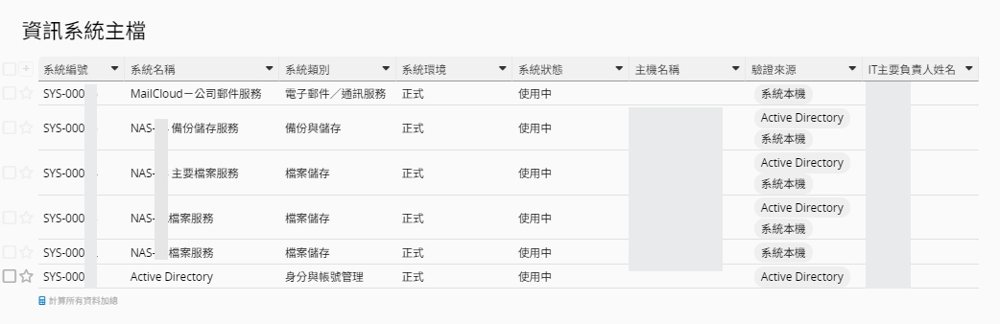
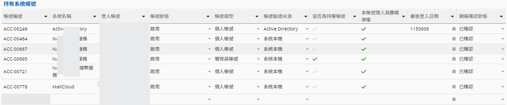
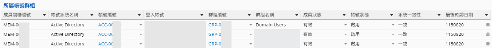
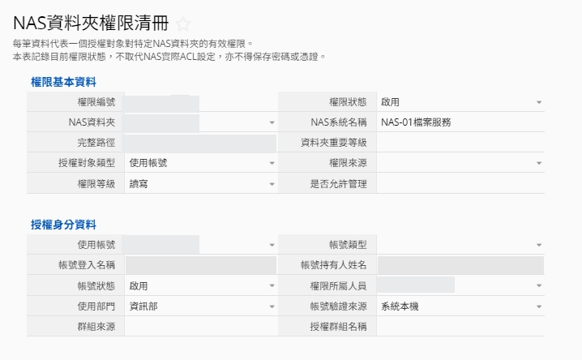
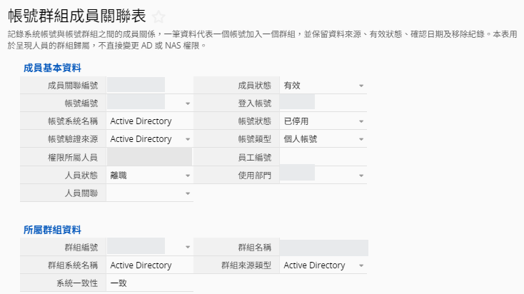

問題不是「沒有清冊」，而是資料彼此沒有關係
從分散帳號清冊，轉為可追溯的關聯資料模型。
帳號分散
AD、三台 NAS、MailCloud 各自管理，命名與狀態標準不一致。
離職風險
人員離職時，難以一次確認所有帳號、群組與資料夾權限。
交接困難
系統、承載設備、維護廠商與窗口資訊分散，仰賴個人記憶。
建置目標
- 以人員為核心，彙總跨系統持有帳號與主要公司信箱
- 以獨立帳號主檔管理個人、共用、管理員與儀器帳號
- 將 NAS 資料夾與權限規則拆分，保留一條規則一筆紀錄
- 串接系統、硬體、廠商與聯絡窗口，支援維護與交接
- 保留狀態、責任人、盤點日期與來源，形成 ISMS 稽核證據
十張表單的整體關聯架構
連結欄位指向被引用的主檔，主檔再以子表反向彙總。
← 左右滑動查看完整圖 →
箭頭的意義
連結欄位 → 被引用的主檔，與《ISMS 與帳號權限管理整合實例》採相同畫法：例如 ACC 的「所屬人員」指向 USR，MEM 同時指向 ACC 與 GRP。主檔再以子表反向彙總，因此仍可從人員一路查到帳號、群組、資料夾權限、系統、設備與廠商。MEM 以「ACC｜GRP」作唯一關聯鍵，讓一個帳號可加入多個群組，同一群組也可包含多個帳號；FOLDER 另以「所在 NAS」連結 SYS，圖中省略以保持清晰。
系統、設備、廠商與聯絡窗口
從服務定位一路追溯至承載資產與維護責任。

連結設計
人員、帳號與所屬群組彙總
人員頁同時呈現持有帳號，以及各帳號所屬的群組關係。


USRACCMEMGRP帳號連結人員後，人員頁的第一個子表反向彙總全部 ACC；MEM 再把每個 ACC 的群組成員關係帶回人員頁。共用或服務帳號不必假造人員，只需保留責任單位與維護人。子表中的「是否為特權帳號」「隨人員離職停權」欄位，讓離職時可一次確認須處理的帳號。
NAS 資料夾與權限規則
拆開「目錄是什麼」與「誰擁有什麼權限」。

一條規則一筆紀錄
| 資料物件 | 記錄內容 |
|---|---|
| 資料夾 FOLDER | 完整路徑、所在 NAS、重要等級 |
| 權限規則 PERM | 讀寫／唯讀／自訂／拒絕 |
| 授權對象 | 帳號 ACC 或群組 GRP，或系統內建對象 |
| 最終歸屬 | 經 ACC 帶出權限所屬人員 USR |
everyone、owner 等系統內建對象不連結 ACC／GRP，另以「系統內建對象」標記；非標準權限組合記為「自訂」。本表記錄權限狀態，不取代 NAS 實際 ACL 設定。
帳號群組成員關聯表
以獨立 MEM 紀錄解開帳號與群組的多對多關係。

三種狀態各自獨立
| 狀態 | 描述的對象 | 範例 |
|---|---|---|
| 人員狀態 | 人是否在職 | 離職 |
| 帳號狀態 | ACC 是否啟用 | 已停用 |
| 成員狀態 | 這條群組關係是否有效 | 有效 |
「系統一致性」比較 ACC 與 GRP 的來源系統編號，協助攔截跨系統誤連。
Ragic 連結與自動帶出設計
連結欄位負責選對主檔；載入欄位負責顯示主檔資訊。
| 表單 | 主連結欄位 | 連結目標 | 自動帶出 | 用途 |
|---|---|---|---|---|
| 人員總覽 | 主要郵件帳號 | 系統帳號 ACC | 公司信箱／帳號狀態 | 以帳號主檔為單一來源 |
| 系統帳號 | 權限所屬人員 | 人員 USR | 姓名／部門／人員狀態 | 建立帳號責任歸屬 |
| NAS 權限 | NAS 資料夾 | 資料夾 FOLDER | 系統名稱／完整路徑 | 確認權限套用位置 |
| NAS 權限 | 使用帳號／授權群組 | ACC／GRP | 登入名／驗證來源／狀態 | 確認授權對象 |
| 群組成員 | 成員帳號 | 系統帳號 ACC | 登入名／姓名／部門 | 顯示群組成員資訊 |
| 成員關聯 | 所屬群組 | 帳號群組 GRP | 群組名／來源系統編號 | 建立 ACC × GRP 關係 |
| 資訊系統 | 承載設備 | 硬體資產 HW | IP／資產狀態／角色 | 建立系統承載關係 |
避免失效的設定原則
- 先建立主連結，再設定自動帶出
- 連結鍵優先使用穩定編號（USR／ACC／SYS／FOLDER），不要用姓名
- 匯入更新時，第一欄必須是可比對的 Key
- 改動連結後需重新儲存或批次更新舊資料，既有載入值不一定自行回填
帳號生命週期與 ISMS 稽核應用
把表單資料轉成可執行、可證明的管理流程。
責任人／申請日期
帳號類型／驗證來源
最小權限／核准紀錄
盤點日期／異常註記
權限調整／覆核
停用日期／完成證據
可形成的稽核證據
對應 ISO/IEC 27001:2022 附錄 A：A.5.9 資產清冊、A.5.16 身分管理、A.5.18 存取權限、A.8.2 特權存取權限、A.8.3 資訊存取限制。僅為設計對照，不代表已通過驗證。
未來系統擴充藍圖
由帳號清冊延伸為跨部門的身分與權限異動管理流程。
Microsoft 365 帳號
納入 Exchange、Teams、OneDrive，並管理群組與授權方案。
人資異動申請
到職、轉調、留停與離職由人資發起，通知 IT 辦理。
權限調整報表
由人員帳號產生應新增、應移除與待確認的權限清單。
通知與稽核軌跡
保留申請、核准、執行、覆核日期與處理人，逾期自動提醒。
跨部門權限異動流程
STEP 1STEP 2STEP 3STEP 4分階段導入規劃
原則：系統仍不保存密碼或 Token；若未來串接 API，憑證應置於專用秘密管理工具。